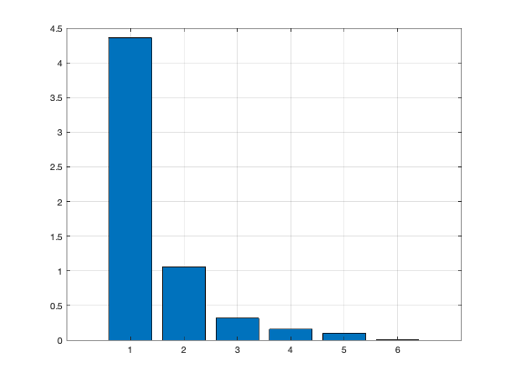
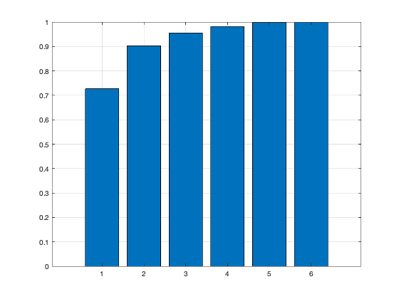
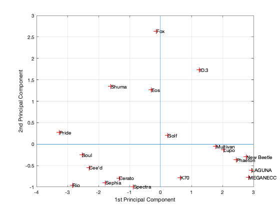
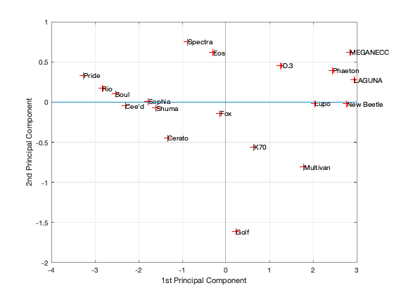
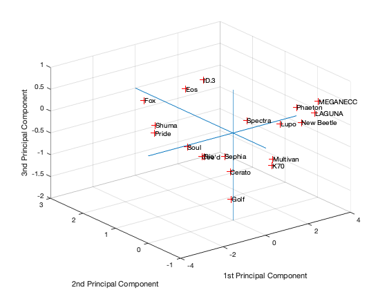
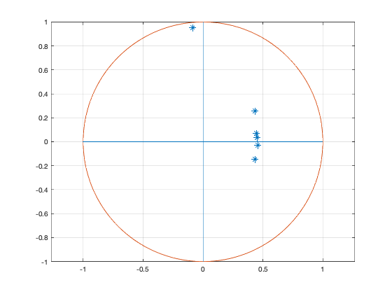
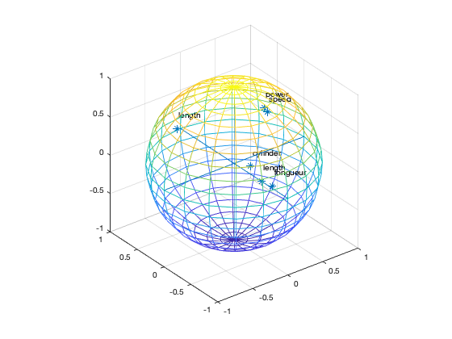

Contents
[dataNum, datatext, alldata] = xlsread('cars.xls','CARS');
Data=dataNum(:,1:6);
Variables = datatext(1,2:7)
Individuals = datatext(2:20,1)
[coeff,scores,eigen_values] = pca(zscore(Data));
coeff
scores
eigen_values
figure('Name','Eigenvalue spectrum','NumberTitle','off');
bar(eigen_values);
grid on
Information_Percentage = cumsum(eigen_values)./sum(eigen_values)
figure('Name','% of cumulative inertia','NumberTitle','off');
bar(Information_Percentage);
grid on
figure('Name','individus','NumberTitle','off');
plot(scores(:,1),scores(:,2),'r+');
text(scores(:,1),scores(:,2),Individuals);
a = axis;
xl = a(1);xu = a(2);yl = a(3);yu = a(4);
xlabel('1st Principal Component')
ylabel('2nd Principal Component')
grid on
hold on
line([xl xu],[0 0])
line([0 0],[yl yu])
figure('Name','individuals 1/3','NumberTitle','off');
plot(scores(:,1),scores(:,3),'r+');
text(scores(:,1),scores(:,3),Individuals);
a = axis;
xl = a(1);xu = a(2);yl = a(3);yu = a(4);
xlabel('1st Principal Component')
ylabel('2nd Principal Component')
grid on
hold on
line([xl xu],[0 0])
line([0 0],[yl yu])
figure('Name','individuals 2/3','NumberTitle','off');
plot(scores(:,1),scores(:,3),'r+');
text(scores(:,1),scores(:,3),Individuals);
a = axis;
xl = a(1);xu = a(2);yl = a(3);yu = a(4);
xlabel('1st Principal Component')
ylabel('2nd Principal Component')
grid on
hold on
line([xl xu],[0 0])
line([0 0],[yl yu])
figure('Name','individuals 1 2 3','NumberTitle','off');
plot3(scores(:,1),scores(:,2),scores(:,3),'r+');
text(scores(:,1),scores(:,2),scores(:,3),Individuals);
a = axis;
xl = a(1);xu = a(2);yl = a(3);yu = a(4);z1=a(5);zu=a(6);
xlabel('1st Principal Component')
ylabel('2nd Principal Component')
zlabel('3nd Principal Component')
grid on
hold on
line([xl xu],[0, 0],[0, 0])
line([0 0],[yl yu],[0,0])
line([0 0],[0,0],[z1 zu])
figure('Name','Variables','NumberTitle','off');
plot(coeff(:,1),coeff(:,2),'*');
grid on
hold on
[x,y,z] = cylinder(1,200);
plot(x(1,:),y(1,:))
grid on
hold on
line([-1 1],[0 0])
line([0 0],[-1 1])
axis equal
Variables =
1×6 cell array
Columns 1 through 5
{'power'} {'cylinder'} {'speed'} {'longueur'} {'length'}
Column 6
{'length'}
Individuals =
19×1 cell array
{'Pride' }
{'Rio' }
{'Soul' }
{'Cee'd' }
{'Sephia' }
{'Cerato' }
{'Spectra' }
{'Shuma' }
{'Eos' }
{'Fox' }
{'Golf' }
{'ID.3' }
{'K70' }
{'Lupo' }
{'Multivan' }
{'New Beetle'}
{'Phaeton' }
{'LAGUNA' }
{'MEGANECC' }
coeff =
0.4534 0.0337 0.5563 -0.0860 -0.0383 -0.6892
0.4362 0.2563 -0.3061 -0.2876 0.7519 0.0465
0.4562 -0.0273 0.5229 0.1059 -0.0459 0.7102
0.4367 -0.1466 -0.3832 0.7892 -0.0499 -0.1249
0.4451 0.0679 -0.4173 -0.4680 -0.6335 0.0528
-0.0849 0.9520 0.0484 0.2384 -0.1650 0.0092
scores =
-3.2636 0.2760 0.3311 0.4166 0.2754 -0.0554
-2.8349 -0.9583 0.1697 -0.4575 0.1977 -0.0785
-2.5280 -0.2486 0.1029 0.0588 -0.5982 -0.1058
-2.3057 -0.5457 -0.0465 -0.0506 -0.2812 0.0532
-1.7751 -0.8998 0.0074 0.1825 0.0938 0.0369
-1.3378 -0.7924 -0.4437 0.0024 0.0973 0.0639
-0.8769 -0.9940 0.7509 0.0040 0.6096 0.0781
-1.5977 1.3449 -0.0740 0.1094 -0.4296 0.0461
-0.2920 1.2637 0.6175 -0.0822 -0.0860 0.0217
-0.1358 2.6344 -0.1397 0.3508 0.3473 -0.0043
0.2326 0.2034 -1.6148 -0.3226 0.3167 -0.0371
1.2549 1.7311 0.4562 -0.8038 -0.0566 -0.0046
0.6400 -0.7814 -0.5604 -0.2567 -0.4881 0.0454
2.0336 -0.1325 -0.0148 -0.4434 0.0910 0.0590
1.7893 -0.0551 -0.8097 0.5080 0.2425 0.0064
2.7684 -0.2982 -0.0230 0.1709 -0.3606 0.0205
2.4460 -0.3647 0.3961 0.9086 -0.1675 0.0407
2.9391 -0.6059 0.2749 0.0881 0.0694 -0.2247
2.8436 -0.7768 0.6200 -0.3834 0.1269 0.0383
eigen_values =
4.3615
1.0548
0.3178
0.1580
0.1023
0.0055
Information_Percentage =
0.7269
0.9027
0.9557
0.9820
0.9991
1.0000
     
sphere in 3d
figure('Name','Variables','NumberTitle','off');
plot3(coeff(:,1),coeff(:,2),coeff(:,3),'*');
grid on
hold on
[x,y,z] = sphere;
m = mesh(x, y, z);
set(m, 'facecolor', 'none');
text(coeff(:,1)+.1,coeff(:,2)+.1,coeff(:,3)+.1,Variables);
grid on
hold on
line([-1 1],[0 0],[0 0])
line([0 0],[-1 1],[0 0])
line([0,0],[0,0],[-1,1])
axis equal
